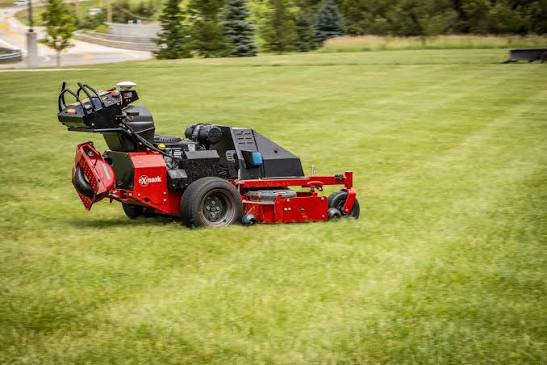

Independent project · Mobile robotics
Autonomous Lawn Mower
Evaluating a conventional mower conversion through drive sizing, sensor selection, and navigation architecture.
- Role
- System architecture & feasibility
- Context / status
- Feasibility study
- Tools & methods
- Mobile robotics · System design · Navigation

01
Overview
This independent feasibility study explores converting a conventional LawnMaster mower into an autonomous mobile platform. The proposed system combines powered wheel drive, outdoor localization, obstacle detection, and navigation. The work focuses on understanding the mechanical and system requirements before committing to a complete build.
02
My contribution
I investigated the platform's mass, wheel size, and drive requirements and compared approaches for computing, sensing, and navigation. I explored how a Raspberry Pi or Jetson could handle higher-level navigation while a microcontroller manages lower-level hardware. My work also considered emergency stopping and how the added systems would fit around the existing mower.
03
Design & development
The study began with estimates of wheel torque and the loads involved in moving the mower. I then explored an architecture using ROS 2 and Nav2, with RTK GPS, an IMU, and wheel encoders for localization. Depth cameras and 2D LiDAR were considered for obstacle detection. These components remain proposed options rather than a fully installed or validated system.
04
Results & next steps
Completed an initial requirements study and candidate system architecture. Drive sizing, localization, obstacle sensing, and stopping behavior were identified as the main integration questions.
The proposed sensors and navigation stack have not been validated on a complete mower. The next step is a controlled drive-system prototype and sensor evaluation.